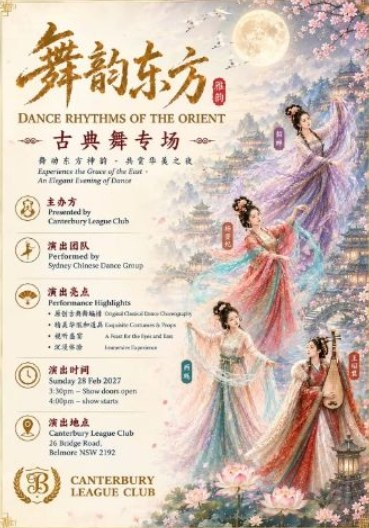

悉尼华人舞蹈团 倾情呈现
舞韵东方 · 古典舞专场
华服、水袖、团扇、长绸……悉尼华人舞蹈团带来一台中国古典舞与民族舞专场。团员们长年坚持基本功训练，这次在正式剧场与大家见面。团长袁菁老师带队，Grace Lei Zhang 也在演出阵容中，等您来台上找找她。
演出场次
接受预订

场次一 · Bankstown
日期2027年2月18日（周四）
时间晚上 7:30
票价普通票 $30
卡座 Booth $35
卡座 Booth $35
座位图中间黄色 1-3A、1-3B 为 $35 卡座，其余为 $30 普通座。最终票价以俱乐部公布为准。
预订这一场 · WhatsApp Grace怎么订票
- 在 Grace 这里登记点「预订这一场」发 WhatsApp，写上姓名和张数。也可以加微信 leigracezhang。
- 团体统一取票Grace 汇总名单交给袁菁老师，舞蹈团按团体（10 张、20 张或更多）统一向俱乐部取票。
- 通知您付款和领票取票后，Grace 会一对一通知您付款和领票方式。
演出由俱乐部主办，票价和取票安排以俱乐部最终确认为准。
官方海报


精彩瞬间


关于舞蹈团
悉尼华人舞蹈团（Sydney Chinese Dance）由袁菁老师带领，团员来自悉尼各区，坚持中国古典舞、民族舞和芭蕾基本功训练，经常参加社区和节庆演出，把中华舞蹈之美带给更多人。
有问题？问 Grace